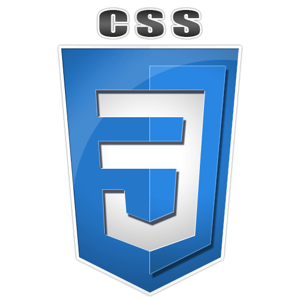
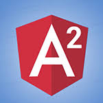

indaniayush
.github.io
Who I am?
< Developer />
||
"Blogger"
^ Dreamer ^
||
* Gadget freak *
@ Student @
||
# Opensource enthusiast #
Want to know more..?
I am a Software developer for whom learning and reusing is everything. Full stack coding is my passion and whenever I get opportunity I develop or reuse new stuff and exploring new domains. I have been always fascinated by Internet and its possibilities that humans can achieve, and thus I am a web developer too. Obsessive about gadgets, I try to keep myself abreast with the latest technology and the creativity that comes along. I have been working on Java, Spring, Mule ESB, Springboot, RESTful Webservices, Jenkins, Pivotal Cloud foundry, Github, SQL, Hibernate ORM, PL/SQL, HTML/CSS, JQuery, Javascript, AJAX, UNIX, Splunk, AppDynamics, JMeter. In my view, technology should not be hindrance to solve problems and hence I am equally dexterous with both Windows and LINUX platforms.
Further, I am an IT associate currently working with HSBC, Pune. In my free time I like writing interesting stuffs and reading others lately; i enjoy being alone at times and I call it as state of Constructive Idealness. And that's exactly when my contemplation begins.
I am associated with
What I am good at?

|
 | |||
|
| `
 |
Well apart from Application Development I have a keen interest in Sports and Blogging. Broadly, I've been playing sports my entire life. And, I am into Blogging from past 3-4 years. It makes me feel refreshed, creative and bring me closer to my inner soul.
Well-Well!! Its not over yet, you can contact me anytime:
Github
LinkedIn
Facebook
Google Plus
FeedBurner
OR
Inbox me @: indaniayush@gmail.com